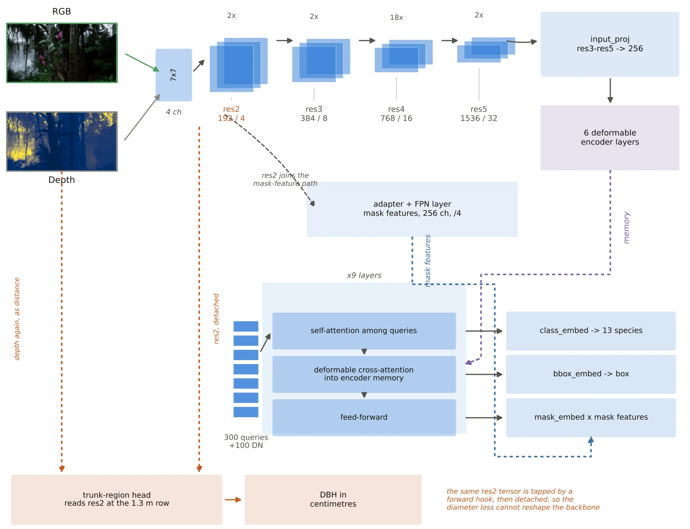

Multitask learning for tree instance segmentation and diameter estimation from RGB-D imagery
Forest inventories turn standing trees into numbers that carbon and policy decisions depend on, and in Indonesia they are still mostly measured by hand. I extended MaskDINO with a FocalNet-L backbone to accept a fourth, depth channel, and added a head that estimates diameter at breast height (DBH) from backbone features at the 1.3 m row. One network returns species-aware instance masks and diameters in a single pass.
62.29%test AP50, species-aware segmentation
7.62 cmDBH RMSE, end-to-end on own detections
+12.92AP50 points from adding depth (controlled)
Read with care. All data is synthetic (Unreal Engine 5), and diameter is returned for about 27% of eligible trees; most of the shortfall is trees the model never detects. The case study states these limits next to the results.